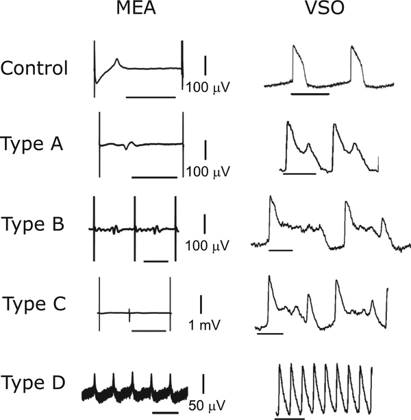

Delayed ventricular repolarization can create a proarrhythmic environment that results in life-threatening cardiac arrhythmias including Torsades de pointes (TdP). A significant challenge in drug development and regulatory decision making is determining the proarrhythmic potential of novel compounds.
The TdP risk categorization calculator tool is used to assess the TdP risk of small molecule compounds in healthy adults to create human-relevant data for greater evidence of safety assurance for drug development and regulatory decision making.
Fitting of these results through machine learning algorithms were used to develop this open-source online calculator.
This calculator receives compound-induced input predictors:
Predictor 2, Were drug-induced arrhythmias observed at any concentration in ≥ 40% wells. (typically in at least 2 out of 5 replicate wells) (0=no, 1=yes)
Predictor 3, Repolarization prolongation (ms) at the first drug concentration with statistically significant (p≤0.05) prolongation or shortening.
Predictor 4, Maximum repolarization change (ms) observed at any concentration.
Predictor 5, Drug concentration (folds over Cmax) at which the first statistically significant (p≤0.05) repolarization prolongation was first observed.
Predictor 6, Drug concentration (folds over Cmax) when drug-induced arrhythmias were first observed.
Predictor 7, Drug-induced repolarization change (ms) at Cmax.

Figure 1. Representative Traces of Four Cellular Arrhythmia-Like Events Recorded in hiPSC-CMs Recorded by (left) MEA and (right) VSO platforms. The horizontal scale bar equals 1 s. We refer to type A arrhythmia as a “mild” arrhythmia-like event in the text. (Blinova et al 2018)
And provides as outputs:
TdP risk categorization estimated from in vitro experiments on hiPSC-CMs
Model 1:
Low TdP Risk probability estimation
High or intermediate TdP risk probability estimation
While this study provides valuable insight into potential TdP risk categories it has some limitations described here (Blinova et al 2018).
Well-exposure analysis studies were not conducted to measure free drug concentration in hiPSC-CM experiments. Future studies should consider detailed well-exposure analysis to determine the amount of nonspecific binding.
The tool does not account for drug metabolites as such active drug metabolites should be investigated independently.
Repolarization wave can be decreased (blunted) following exposure to some compounds making it challenging to detect FPD prolongation.
Only acute (30 minutes) assay duration was investigated. However, chronic timepoints (e.g., days to weeks) may be of interest for specific compounds (e.g., hERG trafficking inhibitors).
This study was not statistically powered to investigate the effect of the electrophysiological device (platform) on the hiPSC-CM assay’s predictivity of proarrhythmic drug potential.
This study was conducted on spontaneous beating (non-paced) hiPSC-CMs. Utilization of field stimulated (paced) input parameters (Patel et al 2019) will require additional verification and validation.
To extend this tool to more complex in vitro models (e.g., co-culture, 3D, disease models) specific verification, validation and optimization will be required.
This model was validated for two commercially available models iCell cardiomyocytes2 and Cor.4U cardiomyocytes. Utilization of additional hiPSC-CM models will require additional verification and validation.
Best practices recommendations suggest inclusion of the predicted Cmax in the selection of drug concentrations to determine Predictor 7. Extrapolation of Predictor 7 may confound TdP risk categorization outputs.
References
Blinova et al. 2018 PMID: 30257217 Patel et al. 2019 PMID: 30912807